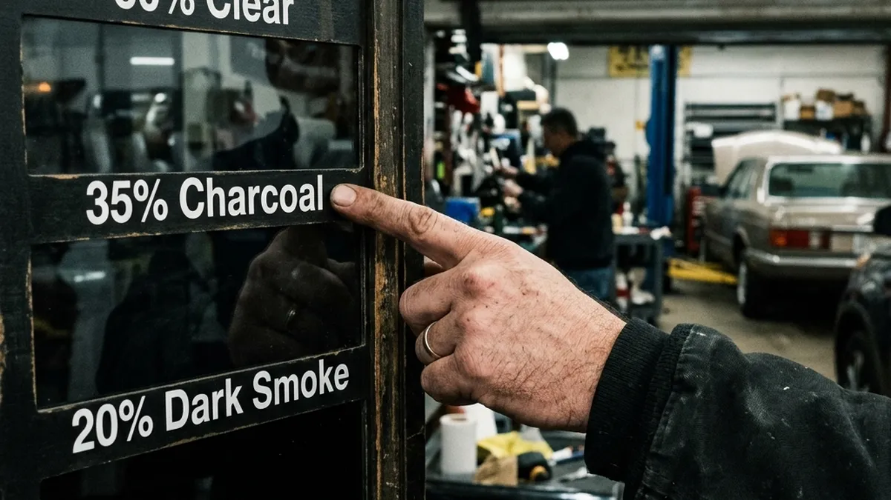

So you've decided it's time to upgrade your ride. You grab your phone and search for "tint a car near me". Suddenly, you're looking at fifty different options. How do you actually find a reputable car window tint service without getting scammed?
The window tinting industry in Southern California is huge. Unfortunately, that means a lot of pop-up shops use cheap materials and bad techniques. If you want a flawless finish that lasts, you need to know exactly what to look for when evaluating a car window tint shop.
Read the Reviews, But Read Them Carefully
Sure, five stars look great. But take a few minutes to read the actual text. Are people praising the specific car window tint service they received? Do they mention the longevity of the film? Are they talking about the shop's warranty? A trustworthy shop will have reviews spanning several years, proving they haven't just popped up overnight.
Pay close attention to how the shop responds to negative reviews. Mistakes happen, but a premier shop will bend over backwards to fix a bad tint job. If the owner argues with customers online, that's a massive red flag.

Inspect the Installation Environment
This is arguably the most critical factor. When you walk into a car window tint shop, look at the bay where the work is done. Is it enclosed? Is it clean? Dust is the absolute enemy of a perfect tint job. If they are installing film outside or in a dirty garage with the doors wide open, your windows will end up with tiny dirt specks permanently trapped under the film.
At Riverside Tints, we maintain clinical-level cleanliness in our installation bays. We know that when you're looking to tint a car near me, you expect perfection. We use computer-cut patterns, premium films, and a completely controlled environment to guarantee absolute precision.